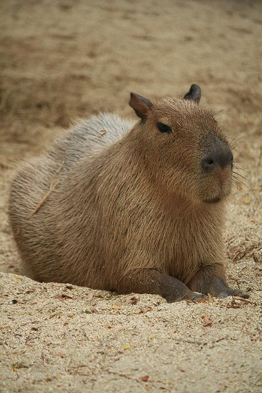

Капибары - спокойные и величесвенные млекопитающие, но никто не
задумался об их разуме, такие ли они глупые? На деле Капибары - одни
из умнейших животных, их почитали ещё древние племена Южной Америки,
мы, развивались всегда быстрее людей. В конце концов, после 2х
капибарьих войн, 9 и 15 веков по святовскому календарю мы пришли к
тому, что жить нужно в мире. Мы избавились от правительства и стали
жить небольшими группами, а вскоре и пришло осознание бессмысленности
всех технологий. Мы - дети природы, мы должны жить по её правилам, мы
не должны ей вредить и убивать таких же как и мы. Но однажды я,
почитаемый политик заметил сколько вреда Капибарам и природе наносят
люди, поэтому я выучив человеческий пришел сюда, чтобы научить людей
жить в мире.
Правила последователей культа:
1 заповедь - Капибары - высшие существа, пишите это слово с большой
буквы
2 заповедь - Никогда и ни при каких обстоятельствах вы не должны ни
высказываться против Капибар, ни наносить им вред
3 заповедь - Всё, что связано с капибарами и мной подписываем official
4 заповедь - Наше официальное приветствие - офф